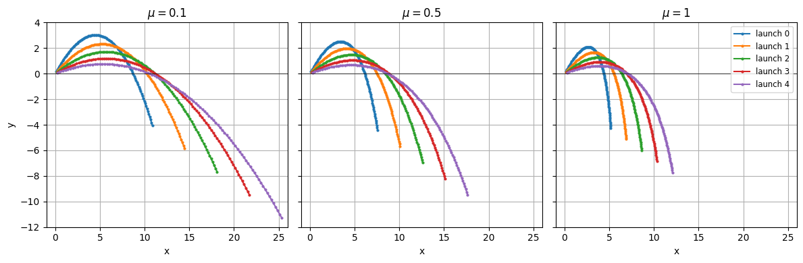

Composing with existing models¶
You’ll plug the ProjectileAcceleration model from the previous
tutorials into a full trajectory simulation — alongside built-in time
integrators, a Newton solve, and a transient driver — and let NEML2
wire everything up by matching variable names.
The full trajectory problem¶
A complete projectile trajectory model needs more than the acceleration formula. Let \(\boldsymbol{x}\) be the position and \(\boldsymbol{v}\) the velocity; the implicit time-integrated system is
The four pieces map onto NEML2 building blocks as follows:
Equation |
Building block |
|---|---|
\(\dot{\boldsymbol{v}} = \boldsymbol{g} - \mu \boldsymbol{v}\) |
The custom |
\(\dot{\boldsymbol{x}} = \boldsymbol{v}\) + the two backward-Euler residuals |
Two |
|
An |
Recursion through time |
A |
Each piece is its own block in [Models]; NEML2 connects them by
matching output names to input names. The custom
ProjectileAcceleration plugs in the same way a built-in would.
The input file¶
# Compose the custom ProjectileAcceleration with built-in time-integration
# and implicit-update blocks to integrate a projectile trajectory.
[Tensors]
# Three different bags of balls, each bag a different drag coefficient.
[mu]
type = Python
expr = 'Scalar(torch.tensor([0.1, 0.5, 1.0]))'
[]
[times]
type = Python
expr = 'Scalar.linspace(0.0, 2.0, 100)'
[]
# Initial conditions carry a TRAILING size-1 dynamic-batch placeholder
# (-> shape (5, 1, *base)) so the (3,) viscosity broadcasts cleanly into
# the second batch axis. The composed run evaluates 5 launches x 3
# viscosities = 15 trajectories in one Newton solve per step.
[x0]
type = Python
expr = 'Vec.zeros(5).dynamic_batch.unsqueeze(-1)'
[]
[v0]
type = Python
expr = '''
v0 = Vec.fill(6.0, 8.0, 0.0)
v1 = Vec.fill(8.0, 7.0, 0.0)
v2 = Vec.fill(10.0, 6.0, 0.0)
v3 = Vec.fill(12.0, 5.0, 0.0)
v4 = Vec.fill(14.0, 4.0, 0.0)
stacked = stack([v0.dynamic_batch, v1.dynamic_batch, v2.dynamic_batch, v3.dynamic_batch, v4.dynamic_batch])
result = stacked.dynamic_batch.unsqueeze(-1)
'''
[]
[]
[Models]
[eq1]
type = ProjectileAcceleration
velocity = 'v'
acceleration = 'a'
dynamic_viscosity = 'mu'
[]
[eq2]
type = VecBackwardEulerTimeIntegration
variable = 'x'
rate = 'v'
[]
[eq3]
type = VecBackwardEulerTimeIntegration
variable = 'v'
rate = 'a'
[]
[residual]
type = ComposedModel
models = 'eq1 eq2 eq3'
[]
[]
[EquationSystems]
[system]
type = NonlinearSystem
model = 'residual'
unknowns = 'x v'
residuals = 'x_residual v_residual'
[]
[]
[Solvers]
[newton]
type = Newton
rel_tol = 1e-08
abs_tol = 1e-10
max_its = 50
linear_solver = 'lu'
[]
[lu]
type = DenseLU
[]
[]
[Models]
[eq4]
type = ImplicitUpdate
equation_system = 'system'
solver = 'newton'
[]
[]
[Drivers]
[driver]
type = TransientDriver
model = 'eq4'
prescribed_time = 'times'
ic_Vec_names = 'x v'
ic_Vec_values = 'x0 v0'
[]
[]
A few things to notice in this file:
ProjectileAccelerationsits next to the built-ins. Theeq1block uses our custom type just likeeq2/eq3use the built-inVecBackwardEulerTimeIntegration.Wiring is implicit, through variable names.
eq1writesacceleration = 'a', and the velocity integratoreq3readsrate = 'a'. Same story forv. NEML2 sees the matches and threads the values through, soais not a free input of the composedresidual.The rest of the blocks (
residual,system,eq4,driver) bundle the three leaves into a single residual, declare which variables are unknowns, wrap the system in a Newton solve, and recurse it through time. SeeComposedModel,ImplicitUpdate, andTransientDriverfor the full option surface.
Inspecting the wiring¶
Before running anything, use neml2-inspect to print the resolved
input/output graph of the composed residual block. Typos and
forgotten renames show up here as unbound inputs or missing outputs,
which is much easier to debug than a deep runtime traceback:
import sys, os
sys.path.insert(0, os.getcwd())
import projectile # registers ProjectileAcceleration with the native factory
# `neml2-inspect` is the same CLI you'd call from the shell (with
# `--load projectile.py` to register the extension). We call the CLI's
# `main` in-process here so the same `import projectile` above does
# double duty and the output prints inline in the notebook.
from neml2.cli.inspect import main as _inspect_main
_inspect_main(["input.i", "residual"])
Model: ComposedModel
Inputs (6):
v: type=Vec
x: type=Vec
x~1: type=Vec
t: type=Scalar
t~1: type=Scalar
v~1: type=Vec
Outputs (2):
x_residual: type=Vec
v_residual: type=Vec
Parameters (1):
eq1.mu: dtype=torch.float32, device=cpu, shape=[3]
Buffers (1):
eq1.g: dtype=torch.float64, device=cpu, shape=[3]
0
The inputs are the trial state (x, v), the previous step’s state
(x~1, v~1, t~1), and the new time t. Note that a does not
appear — it’s resolved internally by eq1. The outputs are the two
residuals x_residual and v_residual that the ImplicitUpdate
will drive to zero.
Running the trajectory¶
The input file sets up a bag-of-balls scenario: three bags with different drag coefficients \(\mu\), each holding five balls thrown at different launch velocities. That’s 15 trajectories, all evaluated in a single batched Newton solve per step.
The batching falls out of broadcasting in [Tensors]: the launch
velocity is a Vec whose dynamic-batch shape is (5, 1) (five
launches, one placeholder viscosity slot), and mu is a Scalar
with dynamic-batch shape (3,). When they meet inside eq1, the
size-1 slot broadcasts against the three viscosities for a (5, 3)
evaluation — one composed graph, one Newton iterate per step.
import neml2
factory = neml2.load_input("input.i")
driver = factory.get_driver("driver")
driver.run()
True
driver.result() returns a flat dict keyed by input.<step>.<var>
/ output.<step>.<var>. The leading (5, 3) on each step’s
position and velocity is the batched (ball, bag) grid:
result = driver.result()
{k: tuple(v.shape) for k, v in result.items()
if k.startswith("output.0.") or k.startswith("output.1.")}
{'output.1.x': (5, 3, 3), 'output.1.v': (5, 3, 3)}
Plotting the trajectories¶
Stack the per-step x outputs along a new leading time axis and
project onto the \(x\)–\(y\) plane. One subplot per bag (viscosity),
five trajectories each:
import torch
import matplotlib.pyplot as plt
nsteps = sum(1 for k in result if k.startswith("output.") and k.endswith(".x"))
positions = torch.stack(
[result[f"output.{i}.x"] for i in range(1, nsteps + 1)]
).detach() # shape (nsteps, 5 launches, 3 viscosities, 3 components)
mu_values = factory.get_tensor("mu").data.tolist()
n_launches = positions.shape[1]
n_visc = positions.shape[2]
fig, axes = plt.subplots(1, n_visc, figsize=(12, 4), sharey=True)
for k, ax in enumerate(axes):
for j in range(n_launches):
ax.plot(positions[:, j, k, 0], positions[:, j, k, 1], "-o", markersize=2,
label=f"launch {j}")
ax.set_xlabel("x")
ax.set_title(rf"$\mu = {mu_values[k]:g}$")
ax.set_xlim(-1, 26)
ax.set_ylim(-12, 4)
ax.axhline(0.0, color="black", linewidth=0.5)
ax.grid(True)
axes[0].set_ylabel("y")
axes[-1].legend(loc="upper right", fontsize="small")
fig.tight_layout()
plt.show()

The lightly-damped bag (\(\mu = 0.1\)) sees the balls fly furthest;
the heavily-damped bag (\(\mu = 1\)) drags them down within a few
meters. All 15 trajectories ran in one Newton solve per step: the
ProjectileAcceleration leaf is written in terms of a single
(v, mu) pair, and the (5, 3) batch grid threads through every
piece without any per-(launch, viscosity) bookkeeping in the leaf
code.
Where to go next¶
Model composition covers composition more broadly — the producer/consumer matching rules, multi-step chains, and parameter binding via output names.
A composed model is itself a
Model, so the same export, AOT-Inductor compilation, and outer composition paths apply to it — see Compiled models for the round trip.